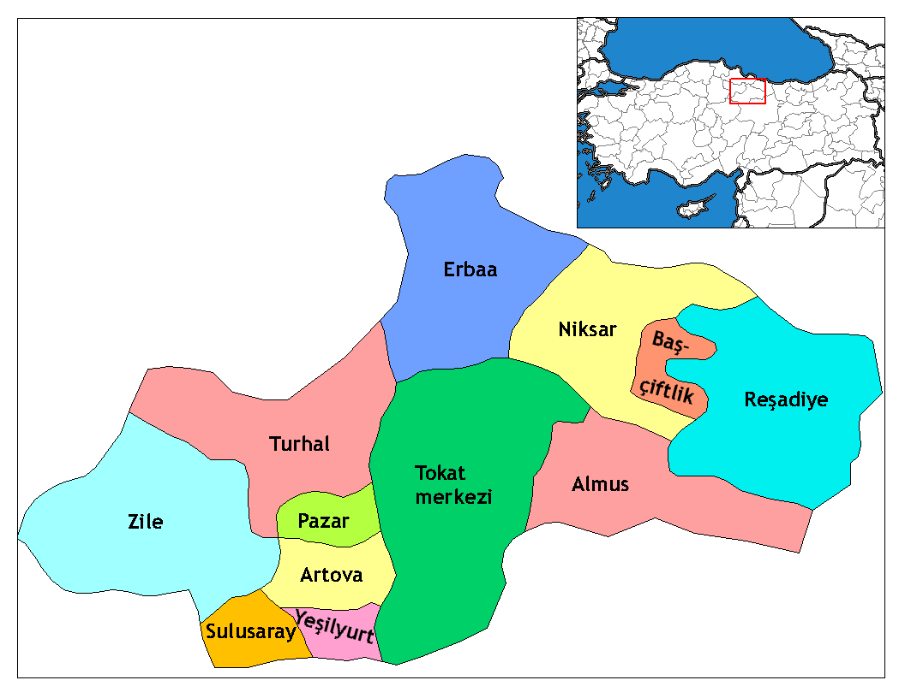

Tokat, Karadeniz Bölgesinde Orta Karadeniz bölümünün iç kýsýmlarýnda yer alýr. Kuzeyinde Samsun, kuzeydoðusunda Ordu, güneyinde Sivas, güneybatýsýnda Yozgat, batýsýnda: Amasya ili ile çevrilidir. Ýlin yüzölçümü: 9958 Km2 dýr. Bu alaný ile Türkiye topraklarýnýn % 1.3'ünü kaplar. Denizden yükseltisi 623 Metredir. Coðrafi Koordinatlarý: 39o 51' – 40o 55' kuzey enlemleri ile 35o 27'- 37o 39' Doðu boylamlarý arasýndadýr. Tokat’ýn merkez ilçesi güneyde yüksek kesim, orta kesim ve kuzeyde aþaðý kesim olmak üzere üç bölüm halinde kümelenmiþtir. Tokat, 1923 yýlýnda il olmuþ, Erbaa, Niksar, Reþadiye, Zile ilçeleri baðlanmýþ, 1943 yýlýnda Taþova, 1944’te Artova ve Turhal, 1954 yýlýnda Almus, 1987 yýlýnda Pazar ve Yeþilyurt, 1990 yýlýnda Sulusaray ve Baþçiftlik ilçeleri kurulmuþtur.Tokat’a baðlý Taþova ilçesi, 1953 yýlýnda Amasya’ya baðlanmýþtýr.Merkez ilçe dahil 12 ilçenin yanýnda 65 belde ve 609 köy mevcuttur. Merkeze baðlý 41 mahalle, 103 köy ve 9 belde bulunmaktadýr. 1927 yýlýnda 262.622 olan nüfus, 2000 yýlýnda yapýlan nüfus sayýmýna göre 828.027 olup, bu nüfusun 113.100’ü merkez ilçede yaþamaktadýr. Km2'ye düþen insan sayýsý 83'tür. Yýllýk nüfus artýþ hýzý %14.73'tür. Daðlar, genellikle ýrmaklarýn açýldýklarý yerlerde ova ve yaylalar, yaklaþtýklarý yerlerde ise Karedenize parelel uzanan sýradaðlar þeklinde devam ederler. Doðuya doðru gidildikçe daðlar birbirlerine çok yaklaþýrlar ve yükseklikleri de artar. Bu nedenle önemli geçitler daha çok plato düzlüklerinin bulunduklarý yerlerdedir.Tokat Ýli Akdað ve Çamlýbel daðlarýnýn oluþturduðu vadiler arasýnda yüksekliði 188 metre ile 2870 metre arasýnda deðiþen bir konumdadýr. Kelkit-Tozanlý-Çekerek sularýnýn havzalarý; bu havzalar arasýndaki yükseklikler, akarsularýn oluþturduðu alüvyonlu düzlükler ve kuzeyden güneye doðru gittikçe yüksekliði artan sýra daðlar ilin önemli yer þekillerini oluþturur. Kelkit vadisinde ortalama yükseklik 300-350 metre, Tozanlý havzasýnda 500-550 metre ve Çekerek havzasýnda 900 metredir. Bu nedenle önemli geçitler daha çok plato düzlüklerinin bulunduklarý yerlerdedir. Daðlýk alanlar Ýl topraklarýnýn % 45 ni kaplar ve üç önemli sýra halinde uzanýrlar. Kuzeyden güneye doðru birinci sýrayý Canik daðlarý oluþturur. Bu daðlar fazla yüksek deðildir. Bu sýradaki önemli doruklar; batýdan-doðuya doðru Killik tepesi (1526 m.), Gölaða tepesi (1502 m) Keltepe (1794 m), Somun tepesi ve Erdem baba tepesi (2181 m.) dir.Ýkinci sýrayý oluþturan yükseltiler; Kelkit-Tozanlý havzalarýný ayýran su bölümü çizgisini oluþturan daðlardýr. Buradaki önemli doruklar; Mercimek tepesi (1203 m.), Poyrazlýk tepesi (1535 m), Dikmen tepesi (1620 m.) , Topçam tepesi (1203 m.), Ýmamgazi tepesi (1779 m.) ve Dönekse daðý (1820 m.) dir. Üçüncü sýra Tozanlý vadisinin güneyinde uzanýr. Ýlin en yüksek daðlarý bu yörededir. Buradaki önemli doruklar; Akdað (1900 m.) Deveci daðý (1892 m.) Çamlýbel (1930 m.) Toraç daðý (2112 m.), Asmalýdað (2116 m.) ve Dumanlý daðý (2374 m.) dir. Ýlimizin en yüksek doruðu Almus barajýnýn güneyindeki Þehnekayasý (2385 m.) daðýdýr.Rakýmý 188 m. den 2870 m. ye kadar deðiþen yükseklikler arasýnda yer alan daðlar; Mamu(1779 m.),Yaylacýk(1620 m.),Deveci(1892 m.),Bugalý(1945m) Dumanlý (2200 m.),Çamlýbel (2020 m.)ve Akdað (1900 m.)dýr. Ovalar, il topraklarýnýn yaklaþýk %15.4 nü kaplar ve tarýma elveriþlidir; Kazova, Tokat ile Turhal arasýnda, yer alan ve Yeþilýrmaðýn suladýðý 20.000 hektardan; Omala(Gözova), Gümenek regülatörü ile Omala köyü arasýnda kalan, 3200 hektar geniþliðindeki sulak alandan;Turhal ovasý, Yeþilýrmaðýn geniþ kývrýmlar yaparak Amasya istikametinde daraldýðý, Dazya deresi önlerine kadar devam eden 4500 hektardan; Niksar, Kelkit ýrmaðýnýn Fatlý kesiminde, Mansap istikametinde, talazan köprü boðazýna kadar devam eden, 8000 hektardan; Erbaa, Kelkit ýrmaðýnýn Tepekýþla önünden baþlayýp, Kale boðazýna kadar devam eden 6500 hektardan; Artova, Günçalý köyü boðazýndan baþlýyarak, Çekerek suyunun Çamlýbel bucaðýný takiben, Sulusaray önlerine kadar devam eden 15.000 hektardan; Zile Ovasý ise 2000 hektarlýk Maþat ovasý, 2000 hektarlýk Iðdýr ovasý ve Yeþilýrmak'ýn kolu Hotan deresinin iki yanýnda yer alan, 6000 hektarlýk ovalarla birlikte toplam 10.000 hektardan oluþmaktadýr.Bu ovalarda tahýl, þekerpancarý, tütün baþta olmak üzere her çeþit meyve, sebze ve ayçiçeði yetiþtirilmektedir. Akarsular, sulama kanallarý ve göletlerle tamamý sulanan ovalar çok önemli üretim alanlarýdýr. Bazý ovalardan (örneðin: Kazova) yýlda iki kez ürün alýnabilmektedir. Tokat ilinde doðu-batý doðrultusunda üç önemli vadi uzanmaktadýr. Birbirlerinden sýra daðlar ile ayrýlan bu vadiler kuzeyden güneye doðru Kelkit Vadisi, Tozanlý Vadisi, Çekerek Vadisi'dir. Diðer bir vadi, ortasýndan Behzat deresinin geçtiði ve þehir merkezinin yer aldýðý vadidir. Vadilerin yapýsý yer yer boðaz vadiler þeklinde uzanýr. Bazý yörelerde vadi tabanlarý geniþ alanlar kaplayarak ova özelliði taþýyan geniþ tabanlý vadiler þeklindedir. Baþlýca yaylalarý, Tokat'ta, Topçam, Batmantaþ, Muhat ve Dumanlý yaylalarý, Reþadiye'de Seleman, Bozçalý ve Kýzýlcaören yaylalarý ile Niksar'da Çamiçi yaylasýdýr.Ýlin batýsýndaki daðlar arasý akarsu vadileri ile parçalanmýþ plato düzlükleri görünümündedir. Baþlýca gölleri Zinav,Güllüköy ve Kazgölüdür. Zinav Gölü, Reþadiye ilçesinin Yolüstü (Meðedüm) köyüne 3 km. mesafede tatlý sulu bir göldür. Gölü besleyen bir dere vardýr. Yüzeyi takribi 1,5. km2.dir. Mansap'tan boþalan ayakla Kelkit ýrmaðýna ulaþýr. Batak yerleri yoktur. Ortalama derinlik 10-15 m. arasýnda deðiþmektedir. Etrafý korunmaya alýnmýþ ormandýr. Kýzýlkanat denilen çok lezzetli balýklarý vardýr.Güllüköy Gölü, Reþadiye ilçesinin ayný isimle anýlan köyündedir. Büyük bir göl olup, yüzeyi 16.5 km2.dir. Yan derelerden gelen sýzýntý sular ve kýþ sularý ile beslenir. Ortalama derinlik 7 m. dir. Suyu tatlýdýr. Kazgölü, Pazar-Zile karayolu üzerinde, Uzümören kasabasý yöresindedir. 7000 dönümlük bir alaný kaplar. Gölün geniþ bir bolümü sazlarla kaplýdýr. Bu sazlýklarda yabankazý, yaban ördeði ve bir çok türde yaban kuþlarý barýnmaktadýr. Göl sularýnda lezzetli sazan balýðý yaþamaktadýr. Gölün Milli park haline dönüþtürme çalýþmalarý sürdürülmektedir.Bunun dýþýnda Almus Barajý Belpýnar, Bozpýnar, Bedirkale, Akbelen, Akýnköy , Sulugöl, Koçaþ, Aþagýðüçlü, Ortaören, Boldacý, Üçyol, Kýzýk, Güzelbeyli, Büðet göl ve barajlarý bulunmaktadýr. En büyük ypay göl olan Almus Baraj Gölü, Almus ilçesinin 3,5 Km. kuzey doðusunda Tozanlý çayýnýn hafif bir dirsek çevirerek Omala (Gözova) ovasý boðazýna girdiði yerde zonlu toprak dolgu tipinde yapýlmýþtýr. Þedde yüksekliði 95 metre. Tepe uzunluðu 350 metre, tepe geniþliði 12 metre, gövde dolgusu 3.500.000 m3 tür. Baraj gölü 950.000.000. m3 hacimlidir. Göl yüzeyi 31.3 Km2 dir. Göl uzunluðu 22 Km. gölün en derin yeri 74 metredir. Kapaksýz, yan kanalý dolu savak 1550 m3zsn su geçirebilir kapasitededir.Göl suyu hidroelektirik tesislere 519 metre uzunluðunda kuvvet tüneli ile girer ve üç adet dikey eksenli Francis türbünleri ile ayrýca sulama çýkýþýndan ýrmaðýn yataðýna karýþýr. Hidroelektirik santralinde herbiri 13.000 KVA lýk 3 jenaratör vardýr.Baraj Arý Ýnþaat T.A.O.tarafýndan yapýlmýþtýr. Yapým çalýþmalarý 23.07.1959 da baþlamýþ ve baraj 5 EKÝM 1966 tarihinde iþletmeye açýlmýþtýr. Baraj hidroelektrik enerjisi üretmek, tarým alanlarýna sulama suyu saðlamak, sel taþkýnlýklarýný önlemek amacý ile yapýlmýþtýr. Gölde yayýn, sazan ve alabalýk türü tatlý su balýklarý vardýr.Barajýn etrafý ormanlarla kaplýdýr ve göl kýyýlarýnda bir çok koylar bulunmaktadýr. Bu özelliði ile Tokat ve çevresinin önemli piknik ve dinlenme yeridir. Tokat'a uzaklýðý 36 Km. dir. Yeþilýrmak, Karadeniz Bölgesinecan veren en önemli akarsudur. Tokat ili topraklarýný Yeþilýrmak ve kollarý sulamaktadýr.Tozanlý Kolu, Köse daðýnýn 2801 m. rakýmlý batý versanlarýndan çýkar. Karacan ve Tekeli daðlarý arasýndaki vadilerden geçerken, birçok yan dereleri alarak 365 km. de Almus Baraj gölüne gelir. Daha sonra Dönek ve Mamu daðlarý arasýndaki 12 km. lik boðazdan geçerek Omala ovasýna girer. Buradan Kazova'ya açýlýr. Gümenek regülatöründen Turhal'a kadar birçok yan dereleri alýr. (Behzat deresi gibi.) Kazova'dan sonra Turhal ovasýna girer. Burada Gülüt ve Hotan yan derelerini alýr. Turhal ovasýndan sonra takriben 30 km. lik bir boðaza girer. Amasya ilinde Gendingen ovasýnda Çekerek kolu ile birleþir. Uzunluðu 468 km. dir.Kelkit Kolu, Erzincan'ýn Kuzeyinde Sipikör, pülür, Otlukbeli, Sarhan ve Balaban daðlarýndan doðan ufak derelerin, Kelkit kasabasý civarýnda birleþmesi ile meydana gelir. Yusuf Bey köprüsü ile Tokat'a girer. Fatlý köprüsüne kadar dar bir vadide kuzeybatý doðrultusunda akarak, Niksar ovasýna girer. Kuzeybatý doðrultusunda akmaya devam edip, Erbaa ovasýný katederek bu ovanýn kuzeyindeki kale boðazýnda, Kale köyü güneyinde Yeþilýrmakla birleþir. Boðazdan Samsun Ýline geçer Uzunluðu 373 km. dir.Çekerek Kolu, Çamlýbel daðlarýndan doðan Kýzýk, Dinar, Çalý ve Kavak tepelerinden doðan Finize derelerinin Çamlýbel bucaðý dolaylarýnda birleþmesi ile meydana gelir. Artova'da güneybatý doðrultusunda akar. Musaköy civarýnda güneyden gelen Karadere kolunu alýr. Sulusaray'dan itibaren, dik yamaçlý dar bir boðaza girip, buralarda Gergümez, Gündelen, ve Akdaðmadeni dereleri ile birleþir. Yangý köyünden kuzeye dönüp, Çellokýþla önünde Ýsa deresi ile birleþip, Kaleboðazý baraj yeri ve daha sonrada Kazankaya baraj yerine gelir. Buradan sonra vadisi geniþler ve Geldigen ovasýna açýlýr. Bekdemir köprüsü civarýnda Çorum'dan gelen Çat deresi ile birleþir. Amasya Kayabaþý mevkiinde, Yeþiilýrmak ile birleþip Karadeniz'e ulaþýr. Uzunluðu 276 km.dir.Yeþilýrmak dýþýnda mevsimlik bir akarsu olan (özellikle ilkbalar mevsiminde karlarýn erimesi ile bol su taþýyan) Keten deresi de Topçam daðlarýnýn kuzeyinde doðu-batý doðrultusunda akan önemli bir akarsudur.Jeolojik YapýsýYerkabuðunu oluþturan kayaçlarýn oluþumlarý ve geçirdikleri evreler jeolojik zamanlarla belirtildiði için Tokat'ýn jeolojik yapýsý; Birinci zaman (Paleozoik) , ikinci zaman (Mezozoik), üçüncü zaman (Neozoik), dördüncü zaman (Kuaterner) jeolojik dönemlere göre þöyle açýklanmaktadýr. BÝRÝNCÝ ZAMAN (PALEOZOÝK) : Tokat ve çevresindeki en eski kayaçlarýn oluþumu bu dönemlerdedir. Bu dönemdeki oluþumlar: Çekerek ve yöresi kuzey ve kuzeydoðuya doðru Turhal-Zile-Tokat yöresi ile Kelkit ve Tozanlý havzasý arasýndaki daðlar boyunca Reþadiye'ye kadar uzanýr. Ýl içerisinde Paleozoik formasyonlarý, killi þistler, kýsmen metornorfizmaya uðramýþ (mermerleþmiþ) kalkerler, serpantin ve diyabazlardan oluþmuþtur. Zile ovasýnýn kuzey ve batý sýrtlarýnda Paleozoik formasyonlar yeþil þistler ve koyu renkli mermerlerden oluþmuþtur. ÝKÝNCÝ ZAMAN (MEZOZOÝK) Bu dönemde genel olarak kalker- marngre - konglomera ve fil iþlerden oluþan kayaçlara, Kelkit vadisinde Erbaa-Niksar-Reþadiye yörelerinde rastlanýr.Zile'nin kuzeyindeki killi þist mermer serisi üzerinde beyaz renkli, bazen kaba ve zoojen yapýda olan kalkerler bulunmaktadýr,Ýkinci Jeolojik zamanda Zile-Turhal bölgesinde önemli mostralar (doðal yarmalar) þunlardýr: 1) Kazancý ve Kelkit köyleri arasýnda Doðu-Batý doðrultusunda kalkerler 2) Eski köy ile Çivril arasýnda lambolar. 3) Çayýr ve Yünlü köyü kalkerleri.Bu kalkerler bazen tipik breþler halinde bulunurlar. Kazancý ve Kelkit arasýndaki kalkerler bölgenin serpantin heyelanlarýndan etkilendiðinden bazen serpantin serisi içerisinde gibi görünürler.Kervansaray ile Tekke Elik arasýndaki kalkerler tamamen zoojendir. Grinoides ve echinid parçalarý ile belemitesleri içerirler. Belemitcslerin bulunuþu bunlarýn mezozoik devre ait olduðunun kesin kanýtýdýr.Zile ovasýnda tek tek olarak sýralanmýþ Zile kalesi, Güvercinlik, Hüseyin Gazi, Akbaba, Çal tepeleri mezozoik kalkerlerden oluþmuþ, etrafý faylarla sýnýrlý hostlardýr.Zile çukurunun kenarýndaki konglomeralarýn çimentosunda orbitoides, marnlý kalkerlerin içerisinde inorceramus, belemitella ve Turhal civarýnda mostralarda anachytes, Tekneli yöresinde inoceramus ve orbitoidesler bulunmuþtur. Bunlar bize kretansen'in varlýðýný kesin olarak göstermektedir. Zile ovasýnýn güney ve güney batýsýnda bulunan merkeze baðlý Fatih ve Süleymaniye köylerinden itibaren geniþ bir saha üst kretase konglomeralarý vardýr. Bunlarýn üzerinde bir marn tabakasý bulunmaktadýr. Konglomeranýn çimentosunda ve marnlardaki mikrofosiller konglomeranýn üst kratesiye ait olduðunu göstermektedir. Bu tabakalar genel olarak kuzey eðilimlidir.Yeþilýrmak havzasýnda mezozoik'in jýýrasik devrine ait Haz katý Kelkit Çayý kuzeyindeki granitik masifleri saran sahralarda görülmektedir. Bunlar Sinemurien'den itibaren zengin ve çeþitli fosilleri içerirler. Lias'ýn özelliði kalýnlýðý'nýn az (100 metre) ve litoloji bakýmýndan somut (homojen) olmasýdýr. Burada lias ile alt kretase arasýnda büyük bir lakün (Stratigrafik boþluk) vardýr.Kelkit çayý güneyinde az çok beyaz renkli yumuþak ve marnlý kalkerlerden oluþan alt kretase vardýr. Liasýn hemen üzerinde bu alt kratesenin bulunmasý burada strafik boþluðun olduðunu göstermektedir.Kelkit Çayý havzasýnda üst kretaseye de rastlanmaktadýr. Burada rastlanan üst kretase boz – beyaz ve pembe kalker þeritleri bulunan yeþilimsi renkli bir filiþten oluþmuþtur. ÜÇÜNCÜ ZAMAN (NEOZOÝK) Almus-Erbaa-Niksar yörelerinde rastlanan filiþ, kalker, marnlý kalker ve konglomeralar, bu zamana ait oluþumlardýr.Eosen filisin önemli mostralarýna Zile-Çeltek'in kuzeyinde rastlanýr.Yine yerel olarak da Zile-Tokat bölgesinde bu devir arazisine rastlanmaktadýr. Bu bölgede eosen genel olarak volkanik ve filiþ fasiyesine (dýþ görünüþüne) ayrýlýr. Volkanik formasyonlar esas olarak da kalker çakýllarýný içerir.Filiþlerde konglomera gre, marn ve bazende kalker mercekleri vardýr.Tokat-Çamlýbel yöresinde Behram köyü sýrtlarýnda konglomera ve Grc'lerdc küçük nümmilitler bulunmuþtur.Kalkerlerde ostrcs gigantica, natica vvillemeti, turritella cmbricalaria, assilina, spira, nummilites laevigatus vardýr ve bunlar eosen döneminin tabakalar dizisinin (formasyonlarýnýn) varlýðýný gösterir. Zile, alüvyon bölgesinin güney sýrtlarýnda alüvyonlarýn bitip, serpantinlerin veya üst krate-se konglomeralarýn baþladýðý yerde açýk renkli ve çoðunlukla yatay tabakalardan oluþan gre, konglomera ve marnlar görülmektedir. Bunlar çok yenidir. Üzerleri alüvyonlarla örtülüdür. Bu formasyon içinde hiçbir fosil bulunmamasýna raðmen diðer benzerlerine göre neojen olmasý muhtemeldir. Zile'de Olukman ve Kireçli köyleri arasýnda neojenin tabanýnda iri elemanlý kumlarla çimentolaþmýþ çakýllarýn özellikle kuartz, þist, radyolorit ve mermer parçalarýndan oluþan konglomeralar bulunmaktadýr. Ayný konlomera ve kumtaþlar Kireçli Köyünün Kuzeyindeki versanlar da (aklanlarda) güney batýya 15-20 derece eðimlidir.Zile ovasýnýn güney kenarýnda Süleymaniye-Fatih Belpýnar çevresinde neojeni kaba taneli kum taþlarý ve marnlý üst kretase onglomeralarýný örtmektedir. Neojen ovanýn merkezinde ve derelerin yataklarýnda kalýn bir alüvyon örtü bulunmaktadýr. Derelerin getirdiði alüvyon ve diðer matelyaller olduðu gibi gevþek çimentolu neojen konglomeralarýn daðýlmasý ile oluþtuklarý için bir çok yerlerde neojenin kalýnlýðý ova ve tek tek oluþan tepelerin kenarlarýnda biraz uzaklarýnda 150-200 metre kadar tahmin edilmektedir. DÖRDÜNCÜ ZAMAN ARAZÎSÝ (Kuaterner) Ýl dahilinde dördüncü zaman arazilerine, Artova-Erbaa-Niksar-Turhal ve Zile ilçeleri ile Kazova-Omala(Gözova) ve Kelkit Ovalarýnda rastlanýr. Bu devir arazilerini kum, çakýl, kil, travertenli topraklar oluþturmaktadýr.Ýl dahilinde maðmatik kayaçlar genellikle Turhal ovasýnda, Tokat'ýn kuzeydoðusunda Almus'tan, Erbaa'nýn kuzeyinde Ayvacýk'a kadar olan bölgenin doðusunda kalan alanýn yaklaþýk yarýsýný kaplamaktadýr.Ýl dahilinde iki ayrý kayaç "heyelan" grubu ayýrt edilir.1- Granitlerden kuvarslý dioritlere kadar kayaçlar.2- Adi dioritlerden itibaren bazik kayaçlar. Tektonik Yapý A-) KIVRIMLAR :Ýl dahilinde Zile ve Tokat dolaylarýnda eski þistlerde þiddetli kývrýmlar Hersinyen Orojenezine atittir. Kretase ile eosen arasýndaki lakün ve diskordanslar laramiyen fazandan (evresinden) sakin geçmediðini gösterir.Asýl paraksismal hareketler pirene fazýna (evresine) aittir. Çünkü oligosene ait jipsli seri geniþ dalga ile kývrýmlý olduðu halde eosen, kratese ve paleozoik anormal durumlar meydana getiren hareketlere uðramýþtýr. Bu hareketler esnasýnda Turhal doðusunda Eðertepe'de, Tokat Merkez ile Tekneli Köyü arasýnda Kýzýliniþ'te ve Çamlýbel'in güney versanýnda (aklanýnda) paleozoik kreatese veya eosen üzerine sürüklenmiþtir.Mezazoik kalkerleri nümilitikten önce önemli kýrýlma ve kývrýlmalara uðramýþtýr. Bu esnada Kelkit depresyonu ve çeþitli dislokasyonlar meydana gelmiþtir.Tersiyer baþýnda þiddetli olan hareketler neojende hemen hýzýný kaybetmiþtir. Genç tabakalarýn yatay durumlarý bunun baþlýca kanýtlarýdýr. B-) FAYLAR (Kýrýklar) :Batýda Saros Körfezi'nden doðuda Araþ vadisine kadar uzanan ve uzunluðu 1500 km den fazla olan bir fay ve tektonik havza sistemi ilimiz dahilinde Yeþilýrmak-Kelkit bölgesinden geçmektedir. Bu stürüktürün genel doðrultusu; Batý-Doðu ile Batý-Kuzeybatý, Doðu - Güneydoðu arasýndadýr. C-) DEPREMLER :Yeþilýrmak havzasýnýn en etkin tektonik stürüktürü Havza'dan-Erzincan'a kadar uzanmaktadýr. Buna ilaveten Amasya civarandaki çukurluklar ile Tokat-Almus - Zile çukurluðu da etkin olan strüktürlerdir. Teknonik strüktürler boyunca sýk sýk hafif depremler olmaktadýr.Sismik zonlarda bulunan Niksar-Tokat-Zile gibi þehirlerimiz Roma devrinden beri önemli yerleþme alanlarýdýr.Buralarda o zamandan günümüze kadar birçok zararlý depremler olmuþtur.En son önemli zarar veren depremler 1939'da doðuda Erzincan'dan, batýda Amasya'ya ve güneyde Sivas'tan, kuzeyde Karadeniz'e kadar olan sahada etkili olmuþ ve çok aðýr hasarlara neden olmuþ ve 40.000 (Kýrkbin) kiþi ölmüþtür.1942 Aralýk ayýnda Erbaa-Niksar yörelerinde þiddetli bir deprem olmuþ ve 500 kiþi ölmüþtür. Ýl dahilinde de zaman zaman bazý stürüktürler boyunca þiddetli depremler meydana gelmiþtir. Diðer hatlarda ise hafif sarsýntýlar gözlenmiþtir.Genellikle bölgede etkili olan þiddetli depremler, dünya ölçüsünde çok þiddetli depremler arasýnda yer almaktadýr. DAÐLARI Genellikle ýrmaklarýn açýldýklarý yerlerde ova ve yaylalar, yaklaþtýklarý yerlerde ise Karedenize parelel uzanan sýradaðlar þeklinde devam ederler. Doðuya doðru gidildikçe daðlar birbirlerine çok yaklaþýrlar ve yükseklikleri de artar. Rakýmý 188 m. den 2870 m. ye kadar deðiþen yükseklikler arasýnda yer alan daðlar;Mamu(1779 m.),Yaylacýk(1620 m.),Deveci(1892 m.),Bugalý(1945m) Dumanlý (2200 m.),Çamlýbel (2020 m.),Akdað (1900 m.) OVALARI Her türlü tarým yapýlabilen bereketli ovalar, ilin dört bir yanýna daðýlmýþtýr.~KAZOVA : Tokat Turhal arasýnda, yer alan ve Yeþilýrmaðýn suladýðý ova 20.000 hektardýr.~OMALA OVASI: Gümenek regülatörü ile Omala köyü arasýnda kalan, 3200 hektar geniþliðindeki sulak alandýr.~TURHAL OVASI: Turhal ve civarýnda, Yeþilýrmaðýn geniþ kývrýmlar yaparak Amasya istikametinde daraldýðý, Dazya deresi önlerine kadar devam eder. 4500 hektar geniþliðindedir.~NÝKSAR OVASI: Kelkit ýrmaðýnýn Fatlý kesiminde, Mansap istikametinde, talazan köprü boðazýna kadar devam eder, 8000 hektar geniþliðindedir.~ERBAA OVASI: Kelkit ýrmaðýnýn Tepekýþla önünden baþlayýp, Kale boðazýna kadar devam eder. 6500 hektar geniþliðindedir.~ARTOVA OVASI: Günçalý köyü boðazýndan baþlýyarak, Çekerek suyunun Çamlýbel bucaðýný takiben, Sulusaray önlerine kadar devam eden büyük bir ovadýr. 15.000 hektar geniþliðindedir.~ZÝLE OVASI: 2000 hektarlýk Maþat ovasý, 2000 hektarlýk Iðdýr ovasý ve Yeþilýrmak'ýn kolu Hotan deresinin iki yanýnda yer alan, 6000 hektarlýk ovalarla birlikte toplam 10.000 hektardýr. Bu ovalarda tahýl, þekerpancarý, tütün baþta olmak üzere her çeþit meyve, sebze ve ayçiçeði yetiþtirilmektedir. YAYLALARI Tokat ilindeki yaylalar, Devlet orman sýnýrlarý içerisinde korumaya alýnan alanlar içerisinde yer almaktadýr. Bunlarýn baþlýcalarý, Tokat'ta, Topçam, Batmantaþ, Muhat ve Dumanlý yaylalarý, Reþadiye'de Seleman, Bozçalý ve Kýzýlcaören yaylalarý ile Niksar'da Çamiçi yaylasýdýr. BARAJ ve GÖLLERÝ~ZÝNAV GÖLÜ: Reþadiye ilçesinin Yolüstü (Meðedüm) köyüne 3 km. mesafede tatlý sulu bir göldür. Gölü besleyen bir dere vardýr. Yüzeyi takribi 1,5. km".dir. Mansap'tan boþalan ayakla Kelkit ýrmaðýna ulaþýr. Batak yerleri yoktur. Ortalama derinlik 10-15 m. arasýnda deðiþmektedir. Etrafý korunmaya alýnmýþ ormandýr. Kýzýlkanat denilen çok lezzetli balýklarý vardýr. GÜLLÜKÖY GÖLÜ: Reþadiye ilçesinin ayný isimle anýlan köyündedir. Büyük bir göl olup, yüzeyi 16.5 km".dir. Yan derelerden gelen sýzýntý sular ve kýþ sularý ile beslenir. Ortalama derinlik 7 m. dir. Suyu tatlýdýr. Bunun dýþýnda Almus Barajý Belpýnar, Bozpýnar, Bedirkale, Akbelen, Akýnköy , Sulugöl, Koçaþ, Aþagýðüçlü, Ortaören, Boldacý, Üçyol, Kýzýk, Güzelbeyli, Büðet göl ve barajlarý bulunmaktadýr. AKARSULARI Tokat ili topraklarýný Yeþilýrmak ve kollarý sulamaktadýr. TOZANLI KOLU: Köse daðýnýn 2801 m. rakýmlý batý versanlarýndan çýkar. Karacan ve Tekeli daðlarý arasýndaki vadilerden geçerken, birçok yan dereleri alarak 365 km. de Almus Baraj gölüne gelir. Daha sonra Dönek ve Mamu daðlarý arasýndaki 12 km. lik boðazdan geçerek Omala ovasýna girer. Buradan Kazova'ya açýlýr. Gümenek regülatöründen Turhal'a kadar birçok yan dereleri alýr. (Behzat deresi gibi.) Kazova'dan sonra Turhal ovasýna girer. Burada Gülüt ve Hotan yan derelerini alýr. Turhal ovasýndan sonra takriben 30 km. lik bir boðaza girer. Amasya ilinde Gendingen ovasýnda Çekerek kolu ile birleþir. Uzunluðu 468 km. dir. KELKÝT KOLU: Erzincan'ýn Kuzeyinde Sipikör, pülür, Otlukbeli, Sarhan ve Balaban daðlarýndan doðan ufak derelerin, Kelkit kasabasý civarýnda birleþmesi ile meydana gelir. Yusuf Bey köprüsü ile Tokat'a girer. Fatlý köprüsüne kadar dar bir vadide kuzeybatý doðrultusunda akarak, Niksar ovasýna girer. Kuzeybatý doðrultusunda akmaya devam edip, Erbaa ovasýný katederek bu ovanýn kuzeyindeki kale boðazýnda, Kale köyü güneyinde Yeþilýrmakla birleþir. Boðazdan Samsun Ýline geçer Uzunluðu 373 km. dir. ÇEKEREK KOLU: Çamlýbel daðlarýndan doðan Kýzýk, Dinar, Çalý ve Kavak tepelerinden doðan Finize derelerinin Çamlýbel bucaðý dolaylarýnda birleþmesi ile meydana gelir. Artova'da güneybatý doðrultusunda akar. Musaköy civarýnda güneyden gelen Karadere kolunu alýr. Sulusaray'dan itibaren, dik yamaçlý dar bir boðaza girip, buralarda Gergümez, Gündelen, ve Akdaðmadeni dereleri ile birleþir. Yangý köyünden kuzeye dönüp, Çellokýþla önünde Ýsa deresi ile birleþip, Kaleboðazý baraj yeri ve daha sonrada Kazankaya baraj yerine gelir. Buradan sonra vadisi geniþler ve Geldigen ovasýna açýlýr. Bekdemir köprüsü civarýnda Çorum'dan gelen Çat deresi ile birleþir. Amasya Kayabaþý mevkiinde, Yeþiilýrmak ile birleþip Karadeniz'e ulaþýr. Uzunluðu 276 km.dir. ÝKLÝMÝ Tokat'ýn iklimi; Karadeniz iklimi ile iç Anadolu'daki step iklimi arasýnda bir geçiþ iklimi özelliði taþýr. Genel olarak yaz mevsimi alçak alanlarda sýcak-kurak, yüksek yerlerde serin yer yer yaðýþlý, kýþ mevsimi soðuk ve kar yaðýþlýdýr. Tokat'ýn iklim özelliðinde denize olan uzaklýðýn ve yüksekliðin etkisi önemlidir. Bu nedenle ikliminde kuzeyden güneye doðru (yükseltinin artmasý nedeniyle)önemli farklýlýklar görülür. Güneye doðru kýþ mevsimi daha sert bir karakter gösterir.Tokat Meteoroloji istasyonunda yapýlan kayýtlar esas alýndýðýnda son 38 yýllýk istatistiklere göre iklimle ilgili bazý özellikler þöyledir.En soðuk ay ortalama 1,8 C ile ocak, en sýcak ay ortalama 21,8 C ile temmuz ayý olmuþtur. Ölçülen en sýcak gün 18 Temmuz 1962 yýlýnda 40,0 C, en soðuk gün ise Ocak 1972 yýlýnda -23,4 C olmuþtur. Yýl içinde sýcaklýðýn 30 derecenin üstüne çýktýðý günler 36 dýr. 20 Cnin üstüne çýktýðý günler ise 176'dýr. Isýnýn ortalama O C'nin altýna düþtüðü günler 60'dýr. Ýlin yýllýk ortalama sýcaklýðý 12,8 C'dir.Ýlçelerin yýllýk ortalama sýcaklýðý ise þöyledir; Turhal 12.9 "C, Pazar 12.2 "C, Zile 11.5 "C, Artova 8,1 "C, Sulusaray 9,3 "C, Erbaa 14,1 "C, Niksar 14,2 "C ve Reþadiye 12,8 "C'dir.Tokat merkezinin yýllýk ortalama yaðýþ tutarý 444,4 mm'dir. En fazla yaðýþ 58,0 mm ile mayýs, 53,7 mm ile nisan aylarýnda en az yaðýþ ise 8,6 mm ile aðustos ayýnda görülür. Ortalama kar yaðýþlý günlerin sayýsý 13 tür. Karýn ortalama yerde kalma süresi ise 21 gündür.Ýlçelerdeki yýllýk yaðýþ miktarý da þöyledir: Turhal 413,3 mm, Pazar 448,6 mm, Zile 450,7 mm, Artova 533,9 mm, Sulusaray 436,0 mm, Erbaa 585.3 mm, Niksar 508,7 mm ve Reþadiye 458,5 mm dir.Rüzgar Durumu : Deðiþik yönlerden esen rüzgarlar Tokat'ýn iklimini ve tarým alanlarýný etkilemesi bakýmýndan önemlidir. Yaz aylarýnda en hakim rüzgar doðu-kuzeydoðu doðrultusunda esen poyrazdýr. Sonbaharýn baþlarýnda da etkili olur. Bu rüzgar yazýn estiðinde serin ve kurudur. Yine yaz mevsiminde zaman zaman kýbleden rüzgarlar eser. Samyeli denilen bu rüzgarlarýn yöredeki diðer bir adý da kabayeldir. Estiði günlerde kavururcu sýcaklýklara neden olur. Kýþýn kuzey batýdan esen karayel, kuzeyden esen yýldýz ve yine doðu-kuzeydoðu yönünden esen poyraz , havalarýn soðuk geçmesine ve kar yaðýþlarýna neden olur. Ýlkbaharda ise batýdan esen rüzgârlar ve güney batýdan esen lodos havalarýn yumuþamasýna ve bol yaðýþlara neden olur. Bu rüzgarlar zaman zaman yýldýrým düþmelerine ve yöre tarýmýný olumsuz etkileyen dolu yaðýþlarýna da neden olur. BÝTKÝ ÖRTÜSÜ Tokat ili topraklarýnýn yaklaþýk olarak %48,8'ý orman ve fundalýklarla %34,8' ekili - dikili alanlarla, %14,5 çayýr ve meralarla kaplýdýr. %1,9'u ise tarýma elveriþsiz alanlardan oluþur. Tokat yurdumuzun sayýlý orman bölgelerinden biridir. Kuzeyde ve güneyde il topraklarýna giren daðlarýn hemen hepsi ormanlýktýr. Bölge ormanlarýnýn geniþliði iller içinde altýncý gelir.Tokat'ta narenciye hariç diðer bütün bitki ve aðaçlarý görmek mümkündür. Erbaa ilçesinde Kozlu, Meydandüzü ve Osmanköy civarýnda yabani çay, Kale köyü civarýda Çatalan ormanlarý ile Reþadiye ilçesi Kazalapa yakýnlarýndaki orman serileri içeriside Lübnan sediri ve Erbaa Doðanyurt (Hayati) ve Niksar Kümbetli (Herkümbet) ve merkez arasýnda kalan alanlarda yabani zeytinlikler ve ayný zamanda bu dolaylarda nar ve incir doðal þekilde yetiþmektedir.Ormanlar daha çok Almus, Reþadiye ve Niksar ilçeleri dolaylarýndadýr. Karaçam, sarýçam, köknar, gürgen ve sedir gibi aðaç türleri en yaygýn olanlarýdýr. Bu aðaç türlerinin içerisinde yer yer fýndýk, kýzýlcýk, yabani erik, elma, ahlat, alýç, gibi türlere de rastlamak mümkündür. Ovalarda ve vadi tabanlarýnda ise söðüt ve kavak çoðunluktadýr. Ýlin güney kesimlerinde (Artova ve Zile dolaylarý) aðaçlar çok seyrekleþir. Bu yörelerde hakim bitki örtüsü bozkýrlar (step)dýr. Ýlkbahar ve yaz baþlarýnda yeþil olan bu bitki örtüsü yaz sonlarýnda sararýr, bozkýr görünümünü alýr.Daðlarýn ve ormanlarýn geniþ yer tuttuðu ilde deðiþik türlerde yaban hayvanlarý da yaþamaktadýr. Bunlarýn baþlýcalarý, kurt, tilki, sansar, tavþan, sincap, vaþak, ayý ve domuzdur. Kuþ türlerinin nesilleri ise giderek tükenmektedir. Bu türden önemli av hayvanlarý kýnalý keklik, býldýrcýn ve yaban ördeðidir.Balýk türleri olarak akarsularda yer alan ve göletlerde yetiþtirilen sazan, aynalý sazan, ve yayýn balýðý önemlidir. Ayrýca Zýnav gölünde kýzýlkanat adý ile tanýnan lezzetli bir tatlý su balýk türü yaþamaktadýr.